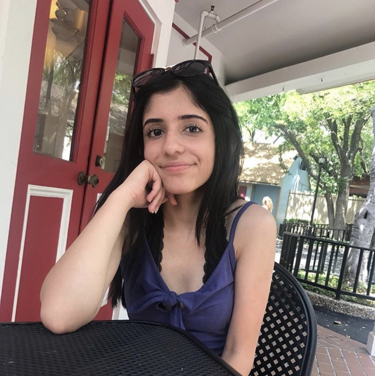
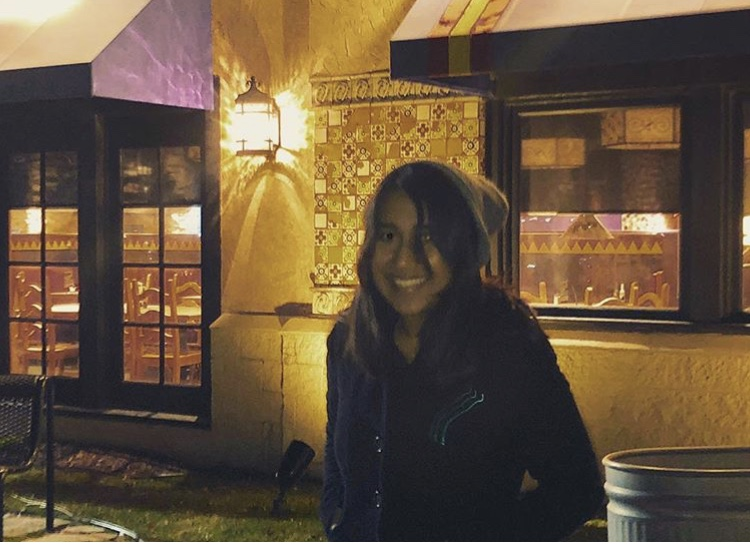

Reflections after the 7 days
Finally the week is over! How will these hard 7 days without technoology impact people’s lives going forward?
Jeren
After a week without technology Jeren was feeling sad. She has family in Iran and wasn't able to see them through Facetime like she usually can. However she felt more connected to her friends and family in Michigan.
Kashika
Kashika felt more connected to her colleagues at her internship at a local marketing firm. She was able to be a better problem solver and connect with her teammates like never before.
Antara
Antara felt better about her schoolwork. Without the threat of looming 3 AM Deadlines Antara actually did her work on time. Additionally, she felt less stressed without social media.